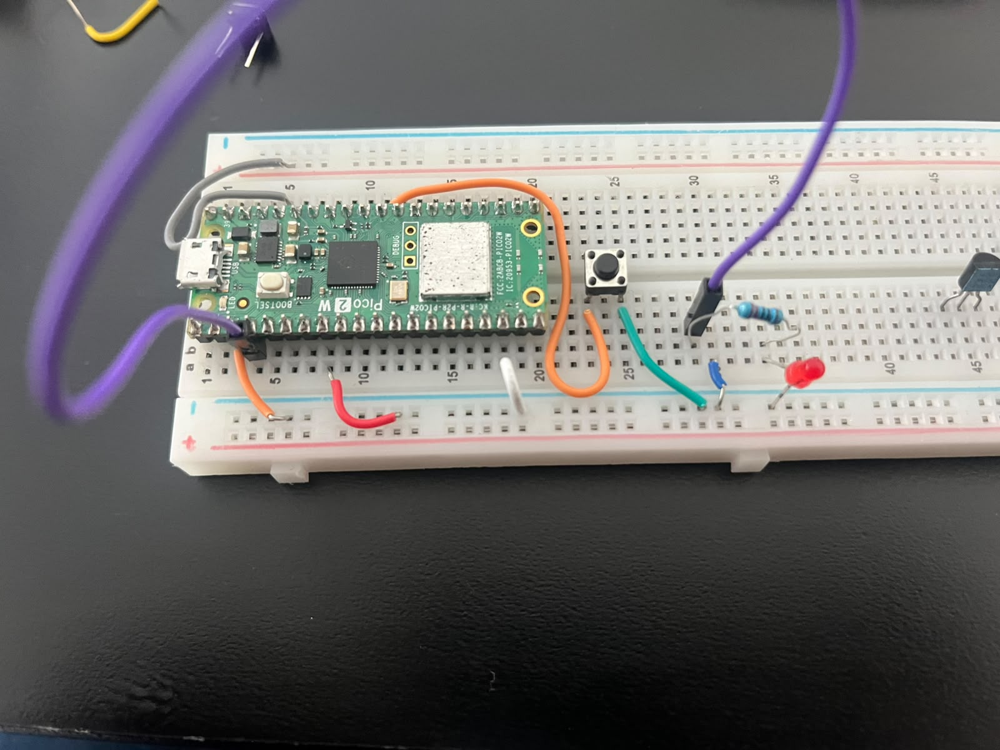
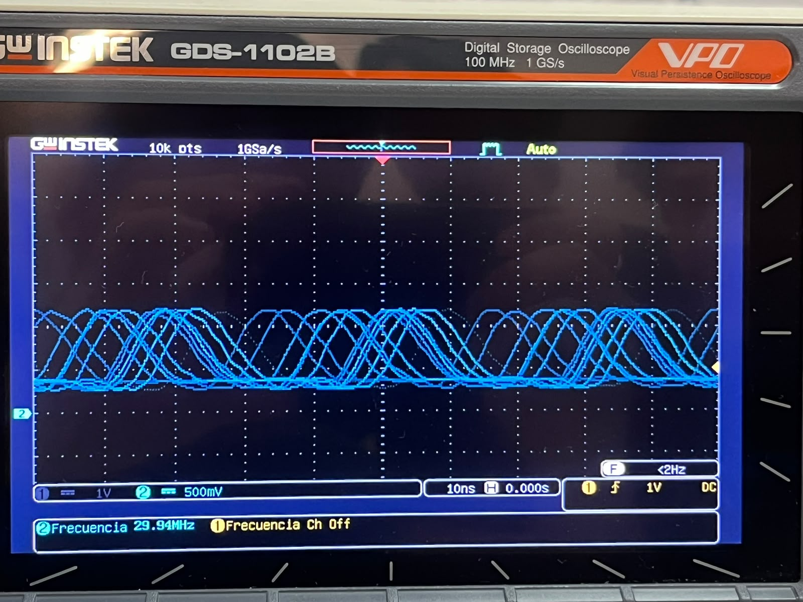

Session 1 - Using low level SIO type instructions to register a blink pulse with mesurment
Goal: Modify the default blink testing code to use SIO low level instruction and mesaure the ON on the osciloscope.
Prediction: the osciloscope will help us measure the ON of the blink, but because of the sleep_ms(500) before the sio_clr we may have a distict delay on the reading of the value, we also expect this delay to be non significant since SIO is supoussed to be a more efficient type of instruction.
Setup
-
Pin map: LED =
GPIO2scope CH1 probe on the catode side of the LED and the ground side of the probe to the common ground of the breadbord via jumper -
Photo:

- Non-default: Nothing, the only change on the scope was the scaling values for visualization purposes
What we did
- New project from "Blink" template in the VS Code Pico extension, board = Pico 2.
- Replaced
gpio_putcalls withsio_hw->gpio_set = bit;/sio_hw->gpio_clr = bit;The replacements were already avaliable trough the class repository. - Using the
Runbutton avaliable in VScode to compile and load the code into the Pi Pico 2 board. - Scope: CH1 1 V/div, 10ns/div,
Evidence

Figure 1: Oscilloscope capture showing the waveform on GPIO2 operating at a measured frequency of ~29 Hz.Predicted vs measured
| Parameter / Signal | Predicted Value | Measured Value | Difference Reason |
|---|---|---|---|
| Pulse Frequency | 1.00 Hz | 29.00 Hz | Unstable probe connection / probe loading across the LED or code execution loop deviation. |
| Period ($T$) | 1000 ms | ~34.48 ms | Inverse relation to the measured 29 Hz frequency ($T = 1/f$). |
| Logic High ($V_{OH}$) | 3.30 V | Intermediate V | Probe placed after the LED drop / lack of solid ground reference. |
| Logic Low ($V_{OL}$) | 0.00 V | > 0.00 V | Residual floating voltage or improper probe attenuation (1X vs 10X). |
What went wrong
-
We stablished in the code that LED =
GPIO2, but before that we had it asPICO_DEFAULT_LED_PINbut still conected toGPIO2, it was easily changed by getting rid of thePICO_DEFAULT_LED_PINand choosing a known pin such asGPIO2. -
We couldn´t get a a clean signal from the probe, it was in between what our Pi Pico 2 considered either a 1 or a 0, we believe it was a voltage error cause the timing was spaced to the defined
sleep_ms(500)but the circuit of the probe did not reach the 0v necessary for 0 or the 3.3v we needed for the 1.
Code
const uint LED = 2;
const uint32_t LED_MASK = 1u << LED;
gpio_init(LED);
sio_hw->gpio_oe_set = LED_MASK;
while (true) {
sio_hw->gpio_set = LED_MASK;
sleep_ms(500);
sio_hw->gpio_clr = LED_MASK;
sleep_ms(500);
}
}
Open question
In the scope we noticed that the graph did not reach neither 0 or 1 values. Is it possible to test any microcontroller signal using the 1v setting for the probe or is a parameter to always consider?